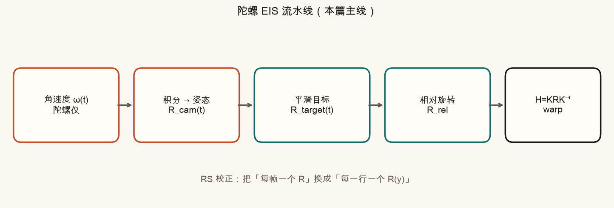
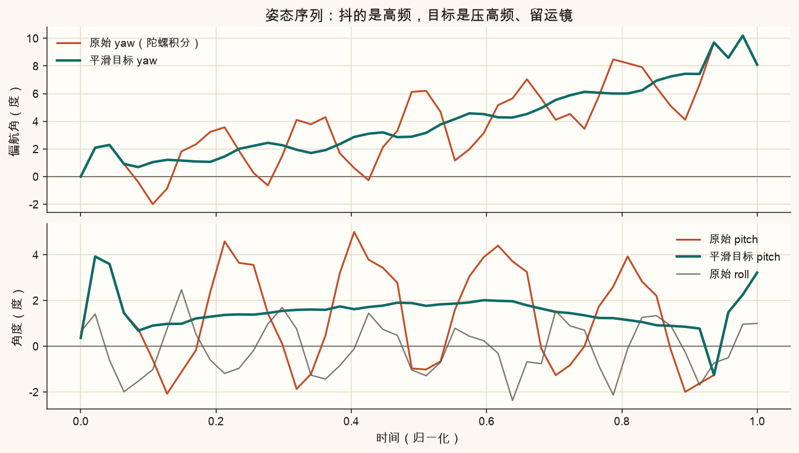
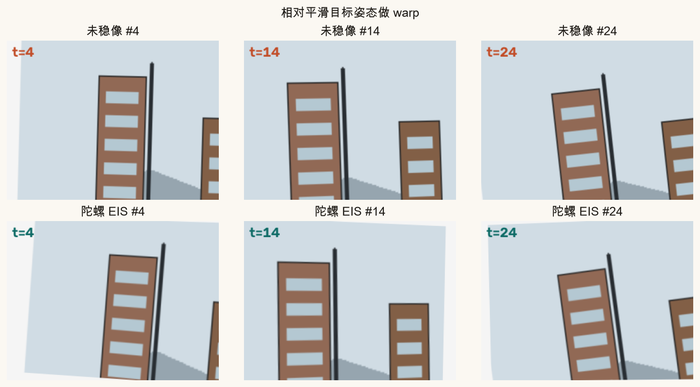
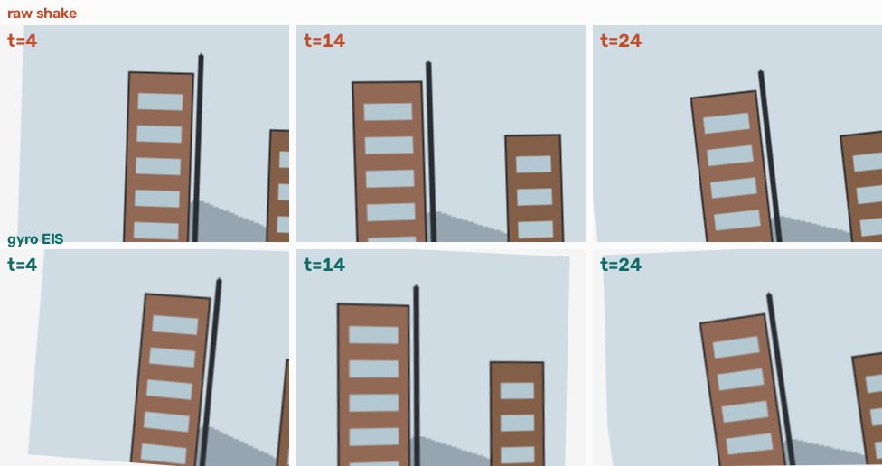
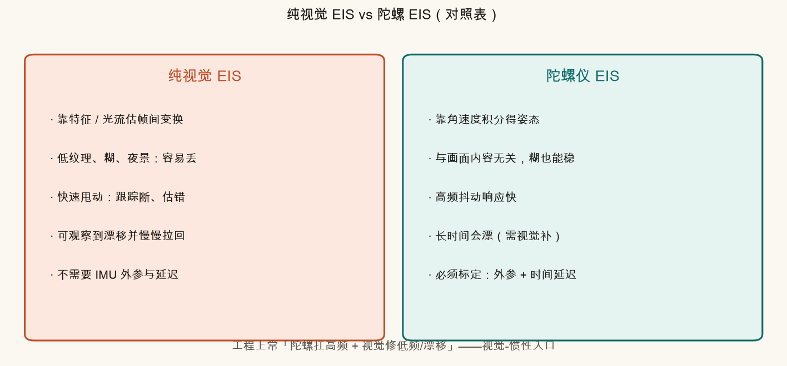
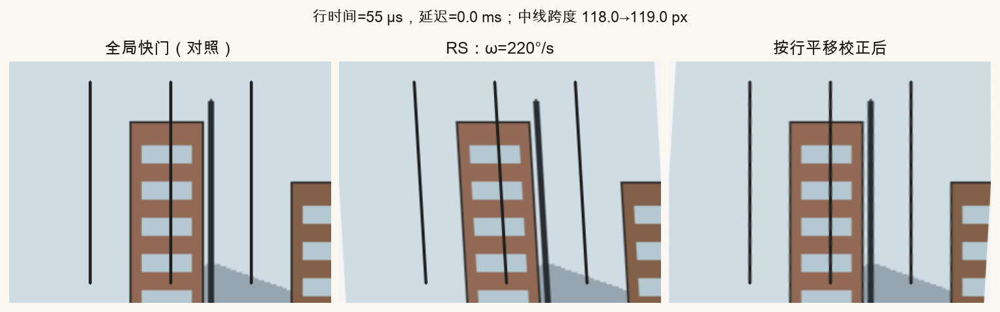
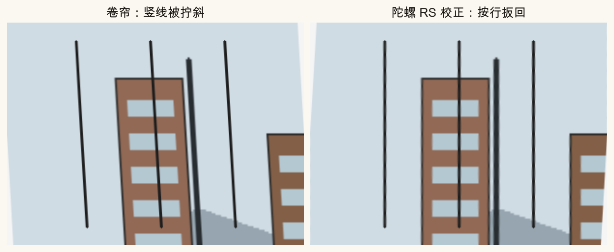
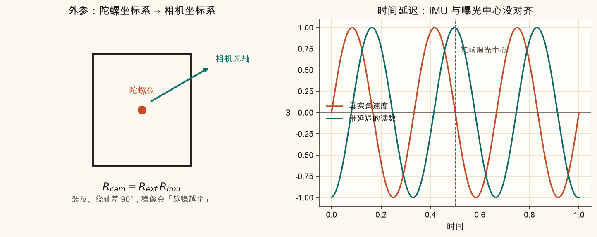
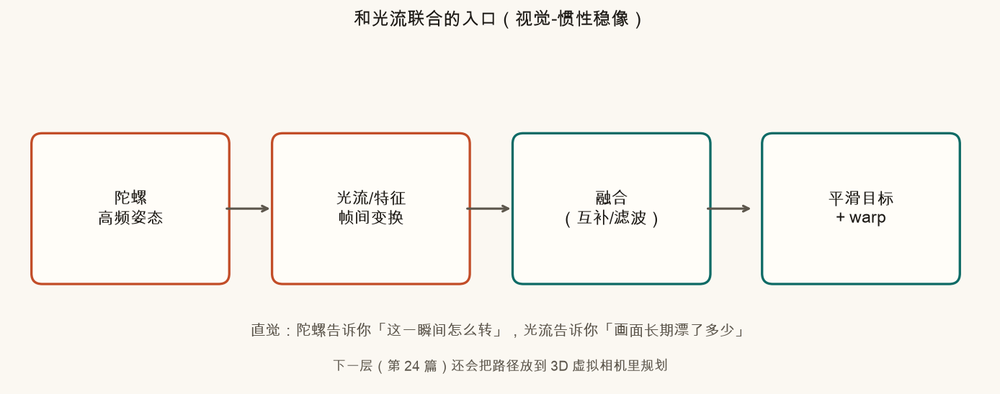

第 23 篇 · 重点 · 约 70 分钟
第 22 篇把角速度积成了姿态。这一篇把姿态变成像素补偿：相对「平滑目标姿态」做 warp，就是陀螺 EIS；再把「每帧一个旋转」细化成「每一行一个旋转」，用来掰直卷帘快门的斜切。对照纯视觉 EIS，并摸清外参、延迟、以及和光流联合的入口。
想象你举着手机拍街景。手机在抖，陀螺仪不停报告「这一瞬间绕哪根轴转了多快」。把角速度积起来，得到每一时刻相机朝哪——这叫姿态（第 22 篇）。
防抖不要「完全冻住朝向」。你故意慢慢扫过街景时，画面仍应跟着走；只是高频手抖要压掉。做法是：

生活类比：你在颠簸的公交上看书。眼睛（平滑目标）跟着书页的大动作走，但不跟着每一次颠簸抖。手（warp）把书页相对你的视线扶正。
脚本合成了一段「手持」姿态：慢速偏航（运镜）+ 高频抖动。橙色是原始积分结果，青色是滑动平均后的目标。

对每一帧：用当前姿态渲染一张「晃着的图」，再用相对目标姿态的旋转去做 warp。上排是未稳像，下排是陀螺 EIS。


设某一帧相机姿态为旋转矩阵 R_cam，平滑目标为 R_target。相对目标「多出来的旋转」是：
Rrel = RtargetT · Rcam
白话：先站到目标朝向的坐标系里，再看当前朝向相对它转了多少。
要补偿，就对画面施加 R_rel 的逆。在已知内参 K（焦距、主点）时，纯旋转对应的像素变换是一个单应：
H = K · Rrel−1 · K−1
再用 cv2.warpPerspective 即可。直觉：三维里转一下相机，再投回二维——远景、纯旋转时，这就是一张 3×3 的 H（和第 2–3 篇的透视是同一家族）。
R_rel = R_target.T @ R_cam
H = K @ np.linalg.inv(R_rel) @ np.linalg.inv(K)
stable = cv2.warpPerspective(frame, H, (W, H))小角度时，绕竖轴转 θ 弧度，画面大约水平挪 f·θ 个像素（f 是焦距像素）。所以「姿态差」最终会变成你看见的平移/旋转/轻微透视。
第 19 篇一路：跟踪特征或光流 → 估帧间变换 → 平滑路径 → 补偿。那是纯视觉 EIS。陀螺 EIS 不看像素内容，只看传感器。

| 场景 | 更信陀螺 | 更信视觉 |
|---|---|---|
| 白墙 / 夜景糊成一片 | ✓ | 特征点不够 |
| 快速甩动、大角速度 | ✓ | 跟踪易断 |
| 开机很久、积分已漂 | 需视觉拉回 | ✓ |
| 外参 / 时间戳未标定 | 会「越稳越歪」 | 不依赖 IMU |
第 21 篇：卷帘快门不是整幅同一时刻曝光，而是一行接一行。若曝光期间相机还在转，上面的行和下面的行「看到」的朝向不同——竖线被拧成斜线，就是果冻/斜切。
陀螺给出角速度 ω。设相邻两行间隔为 row_time（常见约 10–40 微秒），以画面中间行为参考时刻，第 y 行的相对时间是：
Δt(y) = (y − ymid) · row_time
一阶近似（偏航为主）时，这一行相对中心行的水平像素位移约：
Δx(y) ≈ f · ωyaw · Δt(y)
合成 RS：按行把全局快门图挪 Δx。校正：按行挪回来（符号相反）。更完整的写法是每行一个小旋转 R(y)≈Exp(ω·Δt)，再变成单应——脚本注释里写了这条路；演示用一阶平移，足够把「斜→直」看清。


失败案例 1：ω 估小了（或行时间填小了）→ 校正不够，仍斜。失败案例 2：符号反了 → 越校正越斜。失败案例 3：只用帧中心一个姿态做整幅 warp，高频甩动时帧内仍果冻——这正是「要按行」的理由。
陀螺芯片的坐标轴不一定等于相机光轴。差一个固定旋转 R_ext（外参）：
Rcam = Rext · Rimu
装反、绕轴差 90°，稳像会把「该水平补的」补成竖直——看起来像故意捣乱。
另一件是时间延迟：IMU 采样时刻与「这一帧曝光中心」可能差几毫秒。相位错了，补偿会打在错误的时间上：画面像在「追着抖」或「反着抖」。

有趣细节：在本篇一阶「纯偏航切变」模型里，给校正公式加一个与行无关的常数延迟，效果近似整幅平移，竖线仍直。真正伤 RS 校正的，是「每行对应到错误的角速度样本」（时间轴拉错、行时间填错、ω 比例错）。帧级 EIS 则对延迟相位非常敏感。
只积陀螺：高频稳，但会漂。只跑光流：能看见漂移，但糊了就瞎。合在一起的最小直觉：

不装 Python 也能建立手感。下面两个示意对应本篇两条主线。
左图：取景朝向随时间抖。右图：相对平滑目标补偿后的「剩余晃动」。加大平滑，右图更平，但提示裁切比上升。
中间竖线应保持竖直。拖动角速度或行时间，看斜切；打开「校正」用同一模型扳回。把「ω 比例」拧到一半，模拟低估陀螺——校正会不够。
source .venv/bin/activate
MPLCONFIGDIR=/tmp/mpl-cache python code/ch23_gyro_eis.py终端应打印「自检通过」，并写出：
assets/figures/ch23_pipeline.png、ch23_attitude_paths.png、ch23_warp_compare.pngch23_visual_vs_gyro.png、ch23_rs_skew.png、ch23_rs_corrected.pngch23_extrinsic_delay.png、ch23_vio_entry.pngassets/images/ch23_synth_strip.png、ch23_rs_demo.pngch23_my_eis.png、ch23_my_rs.png、ch23_my_rs_fix.png打开 code/ch23_gyro_eis.py 顶部「改这里」。只影响 ch23_my_*.png；课文对照图仍按固定参数重画。
MY_SHAKE_DEG 改成 1.5 再改成 8，对比 ch23_my_eis.png 上排晃动。MY_SMOOTH_WIN 改成 3 与 15：窗口大则下排更稳、灰边往往更多。MY_OMEGA_YAW_DPS 改成 80 与 350，看 ch23_my_rs.png 中竖线斜度。MY_ROW_TIME_US 改成 20，斜切应变弱（总曝光扫过时间变短）。MY_DELAY_MS 改成 5：在本篇一阶模型里主要造成整体平移感；若你改脚本去「用错误 ω 比例校正」，斜切会残留——对应自测里的失败模式。先自己答，再展开。
是相对平滑目标的差。完全锁死绝对朝向会把故意运镜也砍掉，而且边缘裁切会很难看。
远景或纯旋转时，三维旋转再投影，等价于平面上的一个单应。K 把像素和射线方向连起来，R 转射线，再投回像素。
陀螺不依赖图像内容；视觉要靠特征/光流，糊了、没纹理时估计会漂或断。
因为每一行的曝光时刻不同，曝光期间姿态还在变。整帧一个 R 只能对中心行近似正确，上下行仍会斜。
会认为上下行之间转过的角度更大，校正位移过大，可能「矫枉过正」甚至反方向斜（若再叠符号错误更糟）。
补偿轴对不上：该水平挪的变成竖直拧，画面会出现奇怪的扭转或「越稳越歪」。
陀螺（高采样、与纹理无关）扛高频；光流/特征看见的帧间误差更适合修低频漂移与标定残余。
二维仿射 / 单应假设在近景大视差时会不够。下一篇进入 3D 稳像：在三维里规划更平滑的虚拟相机路径，再重新投影，并对比 2D / 陀螺 EIS / 3D 的能力边界。
第 24 篇 · 三维稳像入门（待写）